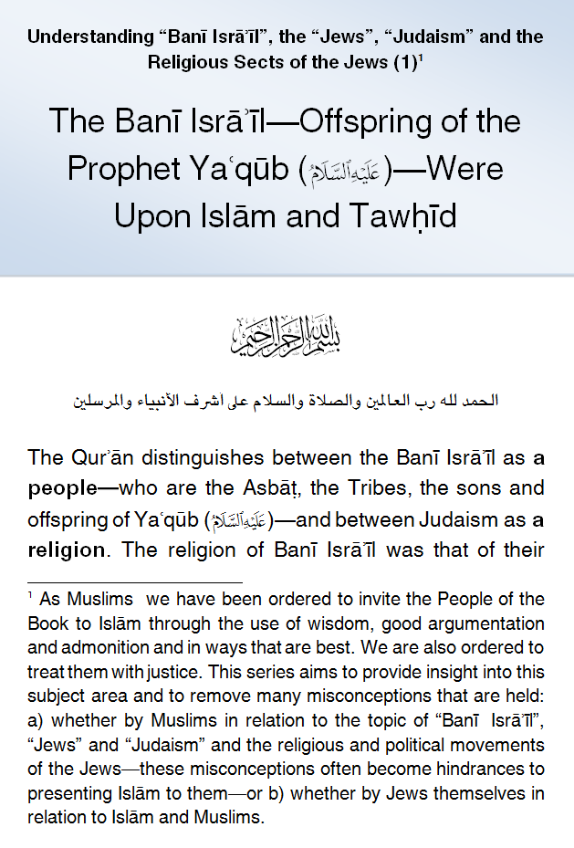
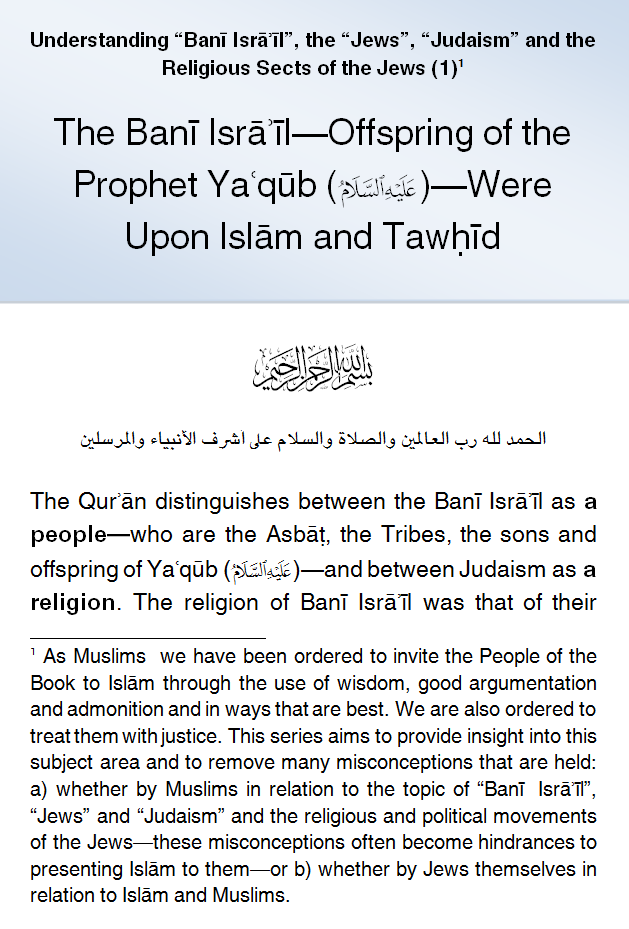

IslamMoses.Com
Posted by Abu Iyaad on Sunday, September, 23 2018 and filed under General
Key topics: Judaism • Children Of Israel • Israelites

|
IslamMoses.Com |
|
The Banī Isrāʾīl Were Upon Islām and Tawhīd Prior to the Development of 'Judaism' Posted by Abu Iyaad on Sunday, September, 23 2018 and filed under General Key topics: Judaism • Children Of Israel • Israelites 
|